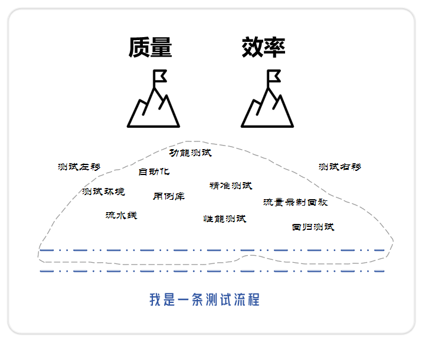

测试流程，别再层层加码了¶

想当初，测试流程很纯粹，就是研发把代码写完了，功能交给测试，测试提bug，测完了上线，再发个测试报告，完事。
现在的测试流程是这样的：需求评审，研发测试排期，设计评审，代码评审，编写用例，用例评审，研发自测，研发提测，流水线，测试环境，冒烟测试，测试执行，缺陷管理，精准测试，合并主干，用例归档，回归测试，性能测试，流量录制回放，测试报告，上线checklist，系统上线，线上验证。
为什么会这样？原因很简单，质量和效率。
为了追求质量和效率，在测试流程方面下功夫，节点变得越来越多，走完一条流程，花在流程本身的时间越来越长。
需求评审：产品负责给研发和测试讲懂接下来要做什么。测试要能够提前发现需求问题，测试左移。
排期：开发和测试，预估工作量，排个时间，什么时候提测，什么时候测完，什么时候上线。业务和产品关心的是尽快上线，不然就要向上升级。
设计评审：研发负责讲解设计思路，评审人员看看合理不合理。测试要能够提前发现设计问题，测试左移。
代码评审：研发负责讲解代码实现，评审人员看看正确不正确。测试要能够提前发现代码问题，测试左移。
编写用例：测试人员编写测试用例，参考需求文档、设计文档等，考虑功能、非功能，用户场景、测试点，系统实现，采用等价类、边界值、场景法等用例设计方法，把用例一条一条写下来。
用例评审：测试人员负责讲清楚测什么和怎么测，包括功能用例和回归用例，既要看用例质量，也要看用例条数。评审完要发邮件，评审结论是否通过，有无待办。同时更新用例。这是大家共识的测试内容，将来可能会作为复盘证据。
研发自测：测试得要求研发完成自测，否则会浪费大把测试时间，测试不是保姆。
研发提测：研发觉得没啥大问题了，交给测试。
流水线：触发自动执行，代码检查，安全审计，部署环境，接口自动化，等等等，有很多原子可以配置。
冒烟测试：冒烟是指机器插上电，看看会不会冒烟。研发提测后，测试要看主要流程通不通。不通可以驳回提测，让研发重新自测。研发可以让测试提供冒烟用例，大家对齐冒烟目标。
测试环境：测试环境、预发环境、生产环境，要有一个完全隔离的测试环境，避免影响线上。
测试执行：按照用例执行，标记通过不通过，执行过程中探索测试，以用例为基础，持续测试，尽可能多的测试，尽可能多的发现问题。有可能会发现需求问题，及时跟产品和研发讨论。这个阶段，测试是主角，推动起来。
缺陷管理：发现bug，及时记录，让bug流转起来，直到关闭。不能关闭的转为遗留项，评估好风险，及时报备。
精准测试：看看测试执行的代码覆盖率，哪些逻辑还没覆盖到，补充测试。根据代码改动自动评估影响范围，自动推荐用例，减少无意义的测试，让测试越来越精准。
合并主干：功能分支测试完成，可以合并到主干了。测试要审批研发的Pull Request。
用例归档：功能用例完善得差不多了，需要合入回归用例，把用例库建设起来。既包括手动用例，也包括自动用例。要完成自动化用例编写。
回归测试：研发把主干合并后部署起来，测试要回归一遍，如果历史功能回归不到位，导致了线上问题，也是要算漏测的。
性能测试：有些需求涉及到性能，需要压测，评估性能。
流量录制回放：人工回归始终没有那么完善，通过真实流量，高保真的回归业务场景。
测试报告：测试完成了，编写测试报告，明确测试结论、遗留项、风险。可以上线了。
产品业务UAT：测试测完了，那么产品和业务也可以验收，看看最终效果是不是当初想的那样。
上线checklist：研发负责把上线的检查项罗列出来，拉上所有人挨个检查一遍，这些检查项都是历史问题的经验教训。
系统上线：在一个月黑风高的夜晚，趁没有多少人使用系统的时候，把新功能发布上去。发布也不能直接梭哈，要灰度，观察没问题了，再全发。
线上验证：上完线，测试还要继续在线上验证，说不定会发现问题，这种半夜惊喜时不时会来一个。如果真有问题，第一时间止损，按照预案，要么回滚，要么紧急修复。同时和研发一起，观察线上日志，监听系统报警。测试右移。
忙活到现在，总算是把新功能按照测试流程，发布上去了。
第二天，下一个需求开始了。